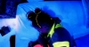

| |
|
Courrier des Lecteurs
2011 - saison 2/3
|
|
 |
13/7/2011 - C.A.
Photo-luminescence :
histoire et matériaux
cdl cdl cdl
Navigation, sommaire
thématique
cliquer ici
Dialogue antérieur -
Dialogue suivant
|
|
CA :
J'effectue des recherches sur les
couleurs fluorescentes. Votre site m'a été d'une grande aide
concernant les différents phénomènes liés à la fluorescence
(photoluminescence, phosphorescence etc...) merci, merci, et encore
merci.
Cependant, certains points "historiques" sont encore, pour moi, un peu
flous :
- savez-vous en quelle année (ou
période) a été découverte la fluorescéine ?
- à quelle période exactement les pigments et colorants fluorescents
on-t-ils été découverts ? par qui ?
- ces pigments sont-ils seulement synthétiques, savez vous s'il existe
des pigments fluorescents naturel ? (peut être à partir de minéraux
fluorescents tels que la fluorite ou l'aragonite...)
|
|
|
|
|
|
|
|
Dtp :
Selon F. Perego, la
fluorescéine (ou plutôt son
sel sodique)
a été synthétisée en 1871 par A. von Baeyer. D'autres ont suivi, comme
la rhodamine B ou la rosamine pour les rouges, l'auramine O et la
thioflamine T pour les jaunes. La recherche a continué longtemps car
beaucoup de ces substances étaient beaucoup trop fugaces. Les tout
premiers résultats encourageants dateraient des années 60 (jaunes de
coumarine) mais on a cherché un bon jaune jusqu'en 1975 (Hoest).
|
|
|
|
|
|
D'ailleurs la popularisation, voire "la
mode" des couleurs fluo (balles de tennis, feutres surligneurs,
"badges" et "pins", puis vêtements, teintures pour cheveux et objets
plus élaborés), cela commence seulement vers la fin des années 1970
avec une apogée durant les années 80 où la maîtrise industrielle est
acquise.
Pour autant, les pigments destinés aux
effets spéciaux en lumière ultraviolette (en particulier la "lumière
noire") sont beaucoup plus anciens. Les brevets remontent au début
des années 1930. L'intérêt de ces inventions est déjà évident pour la
signalisation et différents secteurs.
|
|
La maîtrise artistique
viendra plus tard. Quelques vignettes ponctuent cet article. Ce sont
des extraits de la vidéo "Possibly
maybe" des artistes
Björk et
Stéphane
Sednaoui, réalisée en 1995.
Plusieurs phénomènes de
photoluminescence y sont à l'oeuvre dans certaines séquences.
 |
|
|
|
C'est seulement dans les années 1920
(voire 30) qu'un modèle réaliste des nuages électroniques et des niveaux
d'énergie est apparu (lire l'article consacré aux
rayons atomiques). Donc malgré les
synthèses du XIXème siècle, notre capacité de
comprendre ce qui se passe dans les
phénomènes de photoluminescence
n'a pas cent ans !
F. Perego date les premiers témoignages
d'intérêt pour la fluorescence au XVIIème siècle.
Il est cependant fort possible que des
recherches et des usages locaux aient eu lieu de par le monde de tout
temps.
|
|
Observer, tâtonner puis
comprendre |
|
|
|
Prenons l'exemple d'un produit naturel
bien connu des peintres, la résine dammar. Elle contient un matériau
jaune fluorescent (information confirmée) bien visible à l'oeil nu
lorsque l'on retire les sacs de déchet résineux à la fin de la
décoction qui permet d'en faire un vernis ou un médium. Cet effet
pourrait être accentué par un vieillissement par réchauffement doux
hors lumière, en partant soit du produit brut, soit des résidus, plus
difficilement du vernis qui est très peu coloré.
Nous ne disposons d'aucune information
sur la permanence de cet effet. Tout cela est à tester mais on peut
imaginer que d'autres cultures se sont déjà penchées sur la question
en constatant ce curieux effet chromatique.
D'autres candidats végétaux existent,
mais nous n'avons pas de confirmation concernant la nature réellement
phospholuminescente des couleurs obtenues. Par exemple le
curcuma quitte sa couleur jaune un
peu orangée lorsqu'il est délayé dans une eau du robinet un peu
alcaline. Il paraît alors d'un jaune-vert franchement fluorescent,
mais l'est-il vraiment ? Ces informations ne
sont pas très faciles à trouver. Elles mériteraient une enquête
approfondie.
|
|
Produits végétaux
fluorescents |
|
|
|
Dès les premières synthèses
occidentales, l'intérêt semble s'être porté sur les substances
organiques. La fluorescence minérale semble en effet poser certains
problèmes.
|
|

|
|
|
|
S'il existe des minéraux fluorescents
naturels tels que ceux que vous citez, ils ne sont pas forcément
employés pour créer du matériau pigmentaire. La fluorite ou fluorine
(CaF2) est avant tout une très importante source naturelle
de fluor existant sous une forme stable, ce qui n'est pas rien étant
donné le caractère hyper réactif du fluor. On en fait essentiellement
de l'acide fluorhydrique.
Ce qui expliquerait que selon F. Perego,
le matériau pigmentaire fluorescent de type minéral soit plutôt un
agencement à base de sulfures de zinc ou de cadmium mêlés de petites
quantités de métaux dits "activateurs" ou "dopants" déjà en partie
identifiées dans les années 1910 (information F. Perego). Ils
provoquent déjà dans la nature des effets semblables, et de
coloration.
Une première recherche parmi les grands
détaillants et producteurs spécialistes du pigment ne donne aucun
résultat pour l'aragonite ou la fluorine. Ce n'est pas très étonnant.
|
|
Produits minéraux
fluorescents |
|
|
|
Broyer de la
fluorine, matériau un peu friable, paraît facile mais ne semble
pas une opération sans danger concernant au moins une variété bien
identifiée, l'antozonite ou fluorine fétide (elle sent quand on la
brise) où demeureraient du fluor libre et des éléments
radioactifs
(radium, transuraniens, ...).
Donc tout dépend de la variété. Si vous
trouvez une fluorine "saine", ce qui ne devrait pas être difficile,
pourquoi pas la broyer et en faire un pigment fluorescent ?
On ne dispose cependant d'aucune
information sur la longévité d'une telle fluorescence. Elle varie sans
doute en fonction des éléments présents. C'est un sujet assez pointu.
Broyer de l'aragonite...
c'est déjà un peu plus difficile mécaniquement parlant (c'est à peu
près dur comme du marbre) et là aussi tout dépend de la présence
d'activateurs. La calcite pure est
complètement incolore ! L'aragonite est un minerai de calcite, ce sont
ses impuretés qui peuvent lui donner certaines propriétés
chromatiques, pas le CaCO3 nominal.
On trouverait aussi des
gypses fluorescents et beaucoup d'autres
minéraux naturels qui ont parfois besoin de métaux additionnels, des
"impuretés" nécessaires pour devenir photoluminescents dans un sens
général, dépassant la seule fluorescence.
|
|
Broyer le minéral
nécessite des précautions |
|
|
|
Pour conclure, c'est vraiment un gros
travail que de trouver un matériau photoluminescent organique ou
minéral sain et pas trop dur, de le broyer et de l'employer comme un
pigment car là aussi il existe des contraintes, notamment avec les
cristalloïdes sans parler des
compatibilités chimiques.
C'est cependant un sujet fascinant qui
demeure très ouvert. |
|
|
|
Retour
début de page
|
|

 Communication
Communication
|
|